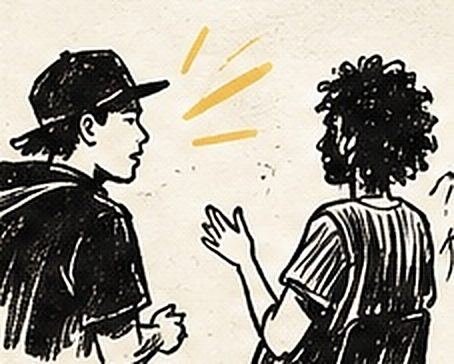
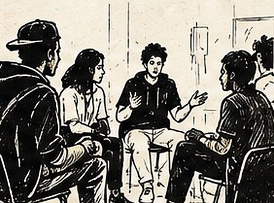
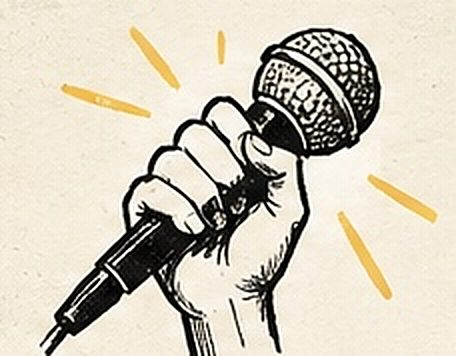

Un battle de compliments avec les jeunes de Bassens
Deux séances de quatre heures avec une douzaine de volontaires, dans une structure jeunesse de Bassens. L'objectif : écrire un battle de compliments assez solide pour tenir devant le public de la Fête de l'avenir.
Auteur : Esope · Intervenants slam : Esope

Une structure jeunesse de Bassens, en Gironde, m'a proposé un format que je connais bien et qui reste, à chaque fois, un vrai défi : deux séances de quatre heures, une douzaine de volontaires, et une scène à tenir au bout. Cet atelier battle de compliments devait aboutir à une restitution lors de la Fête de l'avenir, le 9 septembre. Il fallait donc que des jeunes qui ne se connaissaient pas tous écrivent, en huit heures, quelque chose d'assez tenu pour passer la rampe.
Le contexte : un groupe mouvant, un temps court
Le public était volontaire, ce qui change tout, mais il arrivait au compte-gouttes. Des jeunes poussaient la porte en cours de séance, d'autres repartaient plus tôt. C'est la réalité d'une structure jeunesse : on n'y travaille pas avec une classe fermée, on travaille avec un flux. Mon premier travail n'a donc pas été d'écrire, mais d'accrocher — trouver, dans les dix premières minutes d'un jeune qui vient d'entrer, une raison de rester.
Le battle de compliments est un excellent outil pour ça. C'est un format que j'ai développé avec le collectif Ta Mère La Mieux : deux personnes s'affrontent, mais au lieu de se démolir comme dans un battle de rap classique, elles cherchent la punchline la plus valorisante. Le principe se comprend en une phrase, il fait rire immédiatement, et il transforme le rapport au groupe. Personne n'a peur d'écrire un compliment.

Le déroulement de l’atelier
On a commencé debout, en cercle, sans feuille. Un tour de jeux oraux : on se lance des mots, on répond en rebondissant sur la sonorité, on prend l'habitude d'entendre sa propre voix devant les autres. C'est la partie que les nouveaux arrivants pouvaient rejoindre à n'importe quel moment sans se sentir en retard.
- L'inventaire. Chacun observe un autre participant et note dix détails concrets : une façon de marcher, une manie, une couleur de veste. Pas d'adjectifs vagues, du précis.
- La montée en image. On reprend un de ces détails et on le transforme en comparaison, puis en métaphore. « Tu ris fort » devient « ton rire, c'est le voisin qui perce un mur à sept heures du matin ».
- Le rythme. On tape le texte à la main sur la table pour trouver où ça tombe juste. Une punchline qui n'a pas de rythme ne fait pas rire, même si elle est bien écrite.
- La mise en voix. Chacun dit son texte à une seule personne, puis à trois, puis au groupe. On ne passe jamais directement de la feuille à la scène.
La seconde séance a été consacrée à la confrontation. On tire les duos au sort, on répète, on coupe. C'est presque toujours à ce moment-là que les textes gagnent : obligé de passer après quelqu'un, on comprend tout de suite ce qui fonctionne et ce qui traîne.
Les techniques travaillées
Sous le jeu, on a travaillé exactement ce qu'on travaille dans un atelier slam : la comparaison, la métaphore, l'économie de mots, le placement du souffle, l'adresse à quelqu'un. Le battle de compliments a ceci de pratique qu'il donne un destinataire clair. Écrire « pour » quelqu'un est infiniment plus facile qu'écrire « sur » un thème, surtout quand on n'a jamais écrit.
Ce que les participants ont travaillé
L'atelier permet de travailler la prise de parole devant un groupe, l'écoute — car pour complimenter précisément, il faut avoir regardé l'autre — et la capacité à formuler une idée en peu de mots. Les participants ont aussi été amenés à supporter le regard du groupe dans un cadre où ce regard est bienveillant par construction. Pour des jeunes qui se croisent sans se connaître, c'est un raccourci : à la fin de la première séance, ils ne se parlaient plus de la même façon.

Le moment marquant
Un garçon arrivé à la deuxième heure de la première séance, resté debout près de la porte, n'a rien écrit pendant quarante minutes. Je ne l'ai pas poussé. Au moment de la mise en voix, il a demandé s'il pouvait « juste essayer un truc » — et il a sorti quatre lignes qu'il avait manifestement tenues dans sa tête tout ce temps. Elles étaient meilleures que beaucoup de textes couchés sur le papier. Sur scène, à la Fête de l'avenir, c'est lui qui a déclenché la plus grosse réaction du public.
Ce que ce projet a permis d’explorer
Ce projet a montré qu'un groupe instable n'est pas un obstacle si le format est assez rapide à comprendre et assez gratifiant pour donner envie de rester. En huit heures, une douzaine de jeunes sont passés d'un cercle de gens qui s'observent à une équipe capable de tenir une scène. Si vous accompagnez un public jeune en structure et que vous cherchez un projet qui produise vite du concret, le cadre se construit avec vous.